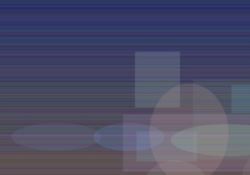
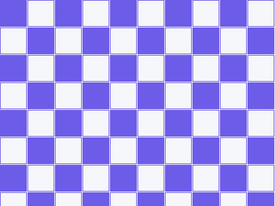

关于 WebCompress Pro
项目愿景
WebCompress Pro 致力于构建一个完整的企业级网页资源压缩解决方案。通过深入研究经典压缩算法的数据结构原理，我们实现了高性能的 Deflate/LZSS/Huffman 引擎。
技术路线
- 第一阶段：完成核心算法实现（Deflate、LZSS、Huffman、Delta）
- 第二阶段：构建 C++ 封装层和 pybind11 绑定
- 第三阶段：开发 PyQt6 桌面应用界面
- 第四阶段：实现可视化分析和网络传输模拟
- 第五阶段：发布 WebAssembly 版本供浏览器直接调用
团队成员

算法工程师
负责 C++ 核心算法的设计、实现与优化工作

前端工程师
负责 Python GUI 开发、可视化分析和用户体验设计